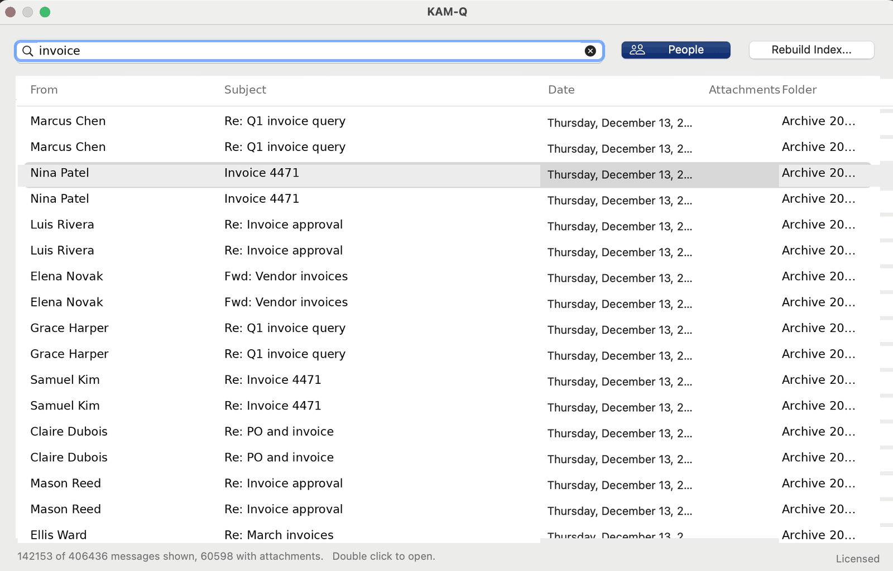
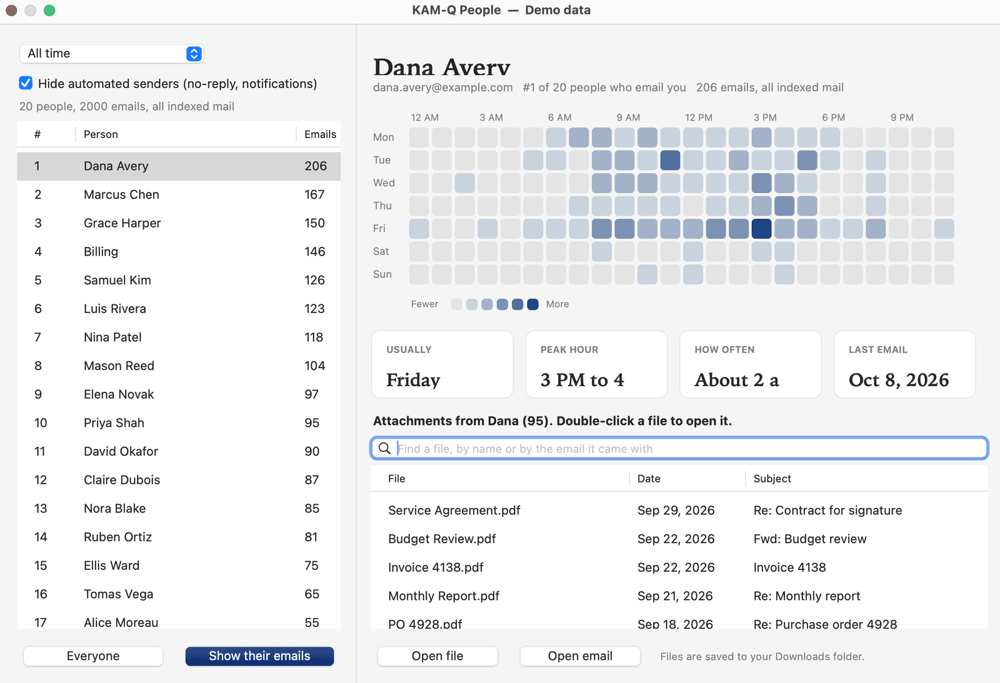
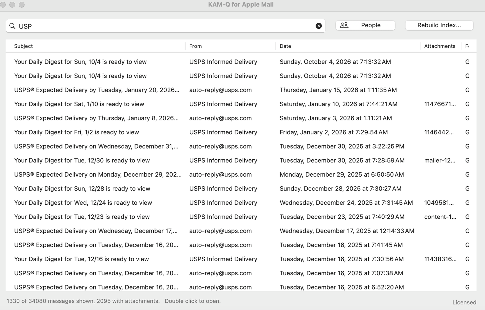

Find any email, person, or file in an instant.
KAM-Q™ builds a search index of your mailbox on your own computer. Results appear as you type, you see who emails you most and when, and every file they have ever sent is one click away.
Free for 7 days. Version 2.0.2, 433 KB. Windows 10 or 11 with classic Outlook.
Free for 7 days. The demo runs here in your browser. The Windows and Mac apps install on a desktop or laptop computer, not on a phone, so open the download page on the computer you want to search mail on.
That email from 2018? Found it.
Search that keeps up with you
Built for people who live in email and need an answer in seconds, not minutes.
Instant search
Type any part of a subject, a name, an address, a folder, or an attachment name. Words can be in any order. Results filter as fast as you type.
People, at a glance
See who emails you most, when each person usually writes, how often, and when you last heard from them. Automated senders are filtered out.
Every file, by person
One list of every attachment someone has sent you, newest first. Open the file, or the email it came in, with a click.
Private by design
Your mail is yours. KAM-Q is built so it never has to leave your computer.
- Local index. On Windows and Mac, KAM-Q reads your mail through Outlook or Apple Mail on your own computer and keeps its index there.
- No KAM-Q servers. The web version talks straight from your browser to Microsoft or Google. Your mail does not pass through us.
- Read-only for Outlook. The Outlook versions only read. They never send, move, or delete mail.
- Gmail Cleanup is careful. Cleanup moves a sender's old mail to Trash, only when you ask, with an Undo button. KAM-Q never deletes anything permanently.
How it works
Three steps, and most of it happens in the background.
- ConnectPick the folders you want to search. Your Inbox and its subfolders are chosen for you.
- Let it indexKAM-Q reads your newest mail first, in batches. You can search within minutes while older mail keeps loading.
- Search and exploreFind messages, open the People view, and pull up the files a person has sent.
See it work
A minute, start to finish. Search, the People view, and opening a file someone sent.
What it looks like
Real windows on a real mailbox. The names and subjects have been replaced, the counts have not.



Works where you do
One product, several ways to use it.
Windows
For classic Outlook. Installs without administrator rights and is digitally signed by PRB Interactive Inc.
Mac
Two apps, one for classic Outlook for Mac and one for Apple Mail. The Apple Mail version searches every account you have set up in Mail, including Gmail, iCloud, Yahoo, and AOL. Both signed and notarized by Apple.
Web
Microsoft 365, Outlook.com, and Gmail, right in your browser.
Gmail add-on
Search and People inside the Gmail sidebar.
Simple pricing
Try it free for 7 days. First year $39.99, or $24.99 with code FIRSTYEAR. Renews at $19.99 a year.
KAM-Q stays yours. Stop renewing and you can still open it and search everything it has already indexed, for as long as you like. What a subscription pays for is keeping the index up to date with new mail, and new versions as they come. One license covers four installations, so your laptop and desktop are both covered, and we refund any purchase within 30 days for any reason.
Questions
Does KAM-Q send my mail anywhere?
No. The Windows and Mac versions keep their index on your computer. The web version connects your browser directly to Microsoft or Google, and we run no server that sees your mail. Read the full privacy policy.
Does it change or delete my email?
The Outlook versions only read your mail. In Gmail, the optional Cleanup feature moves a sender's old mail to Trash when you ask, and you can undo it. KAM-Q never deletes anything permanently.
Which Outlook does it work with?
Classic Outlook for Windows and classic Outlook for Mac. The new Outlook is not supported yet. The web version works with any Microsoft 365, Outlook.com, or Gmail account.
I have a very large mailbox. Is that a problem?
KAM-Q reads mail newest first and in batches, so you can search while it works. Very large mailboxes take longer to finish indexing, and you can choose which folders to include.
How does KAM-Q compare with other search tools?
Start with Why KAM-Q, which puts the three of us side by side and says plainly what KAM-Q does not do. The longer versions are KAM-Q vs X1 Search and KAM-Q vs Lookeen.
Why is Outlook search so slow?
Usually because the Windows Search index is incomplete, or because your mailbox is larger than it was built for. We wrote up the fixes: why Outlook search is slow or missing emails, finding an attachment someone sent you, and searching email on a Mac.
Can I buy KAM-Q for my whole team?
Yes. Team pricing starts at two users: $21 per user per year for 2 to 19, $18 for 20 to 59, and a conversation above that. One key for everyone, one invoice, purchase orders accepted, and no setup fee. We count heads at renewal, so a team that grows into the next tier moves down to it. See the full team pricing, or write to support@kam-q.com with how many people you need to cover.
Who makes KAM-Q?
PRB Interactive Inc., a Delaware corporation. Questions are welcome at support@kam-q.com.